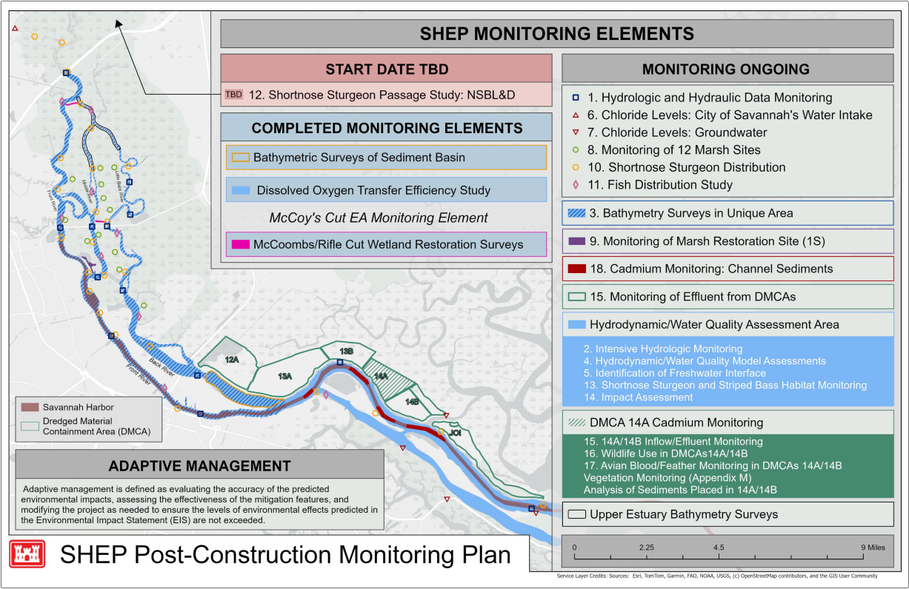

Activities of the SHEP monitoring program include Pre-Construction, Construction and Post-Construction components:
Pre-Construction Monitoring: establish baseline databank/conditions to assist with impact assessment during later phases.
Monitoring During Construction: ensure the construction process is within the environmental constraints imposed by EIS and approvals of the resource agencies
Post-Construction Monitoring: verify that project does not produce more impacts than predicted and mitigation features function as intended
The following figures present the Savannah Harbor Expansion Project Monitoring Placemat as of November 2025. The table summarizes the major components of the SHEP monitoring program and the period of performance for each monitoring element. Appendix D of the Final EIS contains more information about the program and its requirements.

The table above reflects the timeline and schedule for the SHEP Monitoring Program during the Post-Construction phase of the SHEP project. Tables documenting the progression of program schedules during the Pre-Construction, Construction, and Post-Construction phases are available here (earlier schedule) and here (subsequent schedule).
The monitoring elements are summarized below, with information on their spatial extent across the full monitoring area and their current implementation status.
